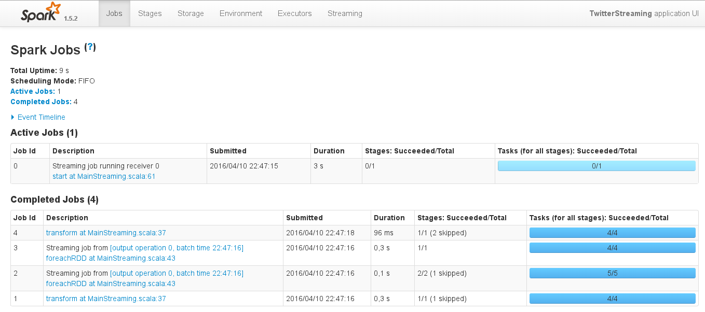

Strumieniowanie danych w Sparku
Bartosz Kowalik
O mnie
- Scala dev @ VirtusLab
- Functional programming fun
- GitHub: bkowalik
- Twitter: bkowalikpl
Pytania do publiczności
- Kto zna Scale?
- Kto zetknął się ze Sparkiem?
- ?
O czym ta prezentacja nie jest
tutorailem od a do z
Czym jest Spark?

Przykład
Rodzaje operacji
Transformacja
| map(func) | reduceByKey(func, [numTasks]) |
| filter(func) | aggregateByKey(zeroValue)(seqOp, combOp, [numTasks]) |
| flatMap(func) | sortByKey([ascending], [numTasks]) |
| mapPartitions(func) | join(otherDataset, [numTasks]) |
| mapPartitionsWithIndex(func) | cogroup(otherDataset, [numTasks]) |
| sample(withReplacement, fraction, seed) | cartesian(otherDataset) |
| union(otherDataset) | pipe(command, [envVars]) |
| intersection(otherDataset) | coalesce(numPartitions) |
| distinct([numTasks])) | repartition(numPartitions) |
| groupByKey([numTasks]) | repartitionAndSortWithinPartitions(partitioner) |
Akcje
| reduce(func) | takeSample(withReplacement, num, [seed]) |
| collect() | takeOrdered(n, [ordering]) |
| count() | saveAsTextFile(path) |
| first() | saveAsSequenceFile(path) |
| take(n) | saveAsObjectFile(path) |
Partycje a RDD
http://blog.cloudera.com/wp-content/uploads/2014/03/spark-devs1.png{kind=link}
Przykład
Wykorzystane komponenty
- Kafka
- Cassandra
- Akka HTTP
Architektura

Kod!
Monitoring
Monitoring
Czego nie pokazałem
- akumulatory
- klastrowanie YARN, Mesos, etc.
- Twierdzenie CAP